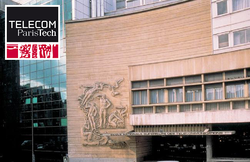

PGDay.eu 2009 se tiendra à Telecom ParisTech, grande école d'ingénieurs française.

L'école se trouve au 46 rue Barrault à Paris.
Pour plus d'informations, visiter le site web de Telecom ParisTech .